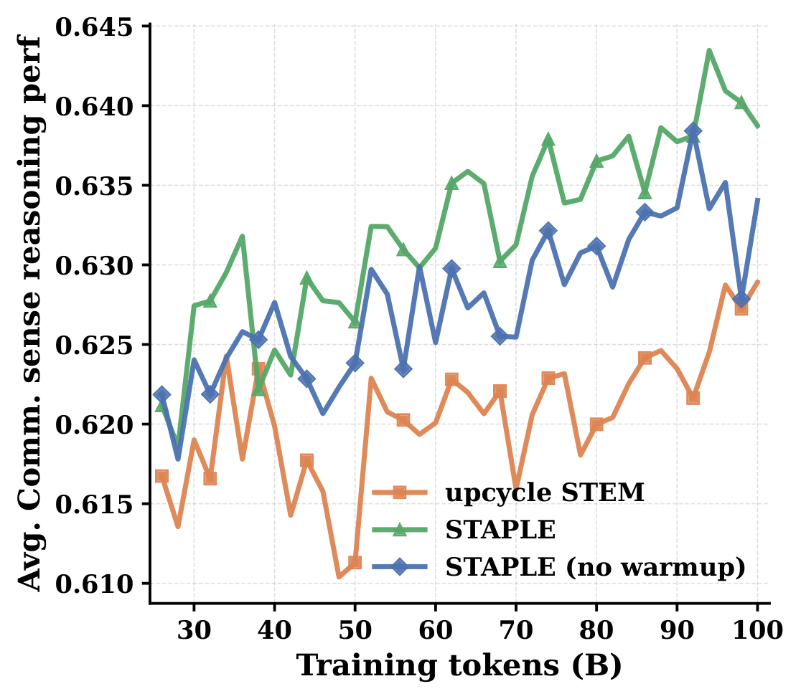
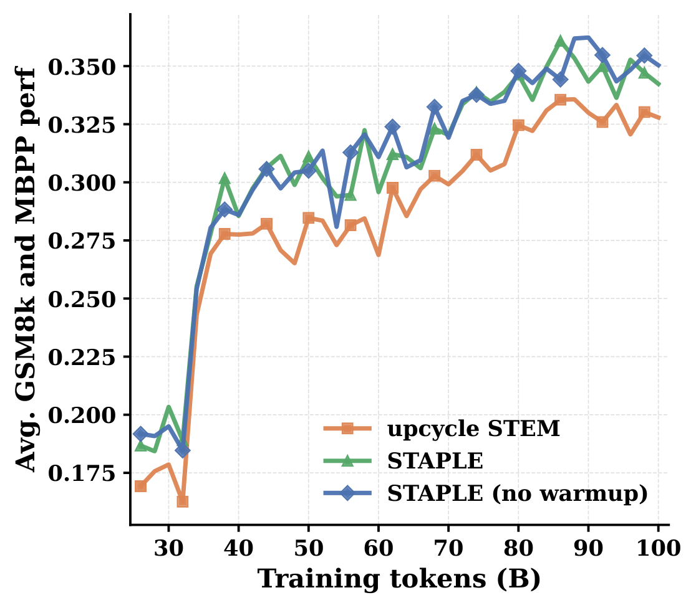
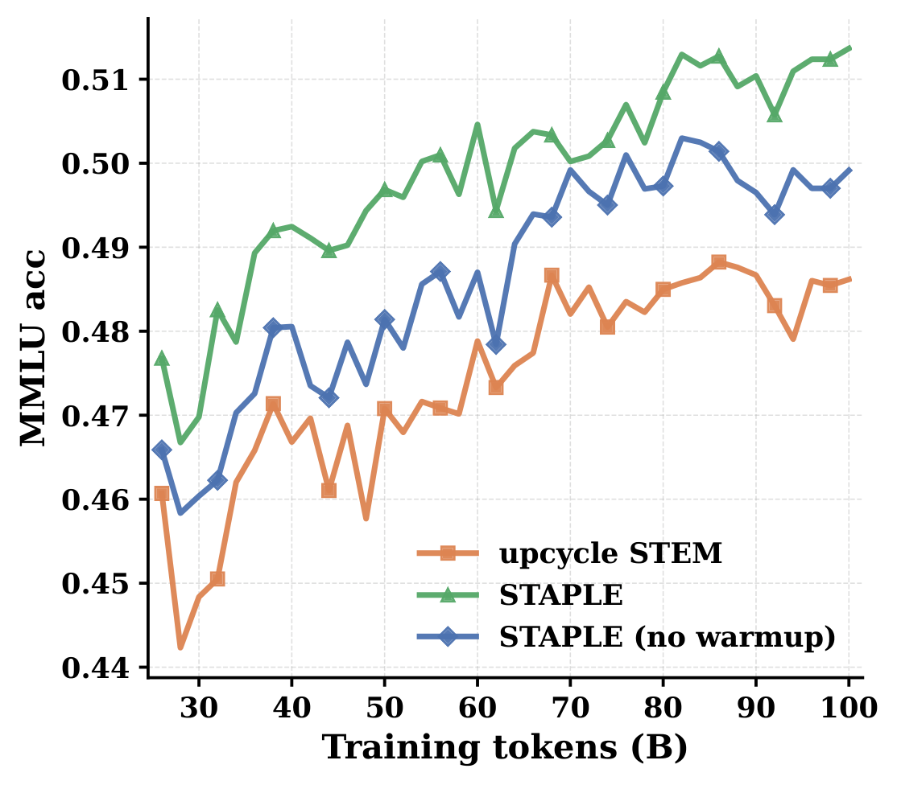
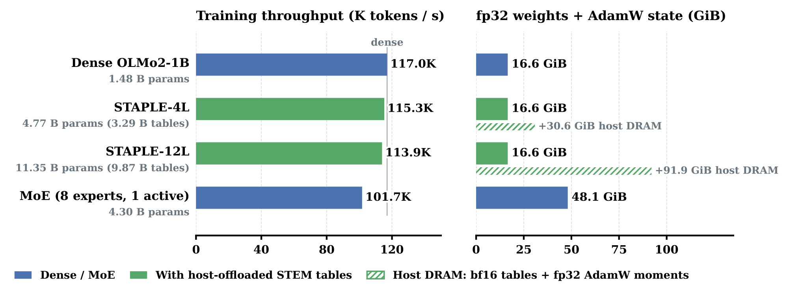
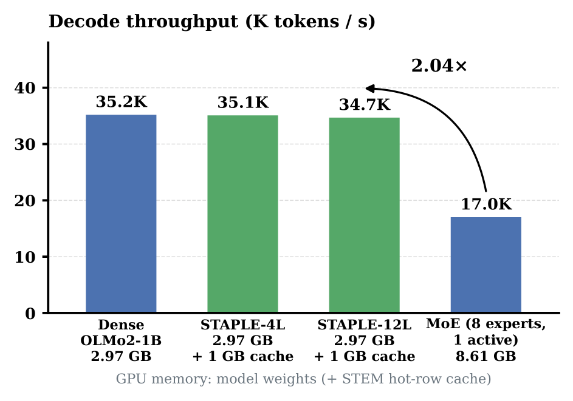
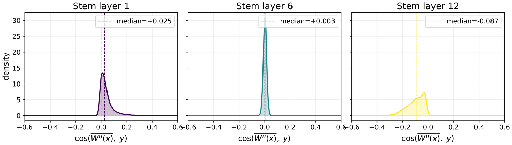
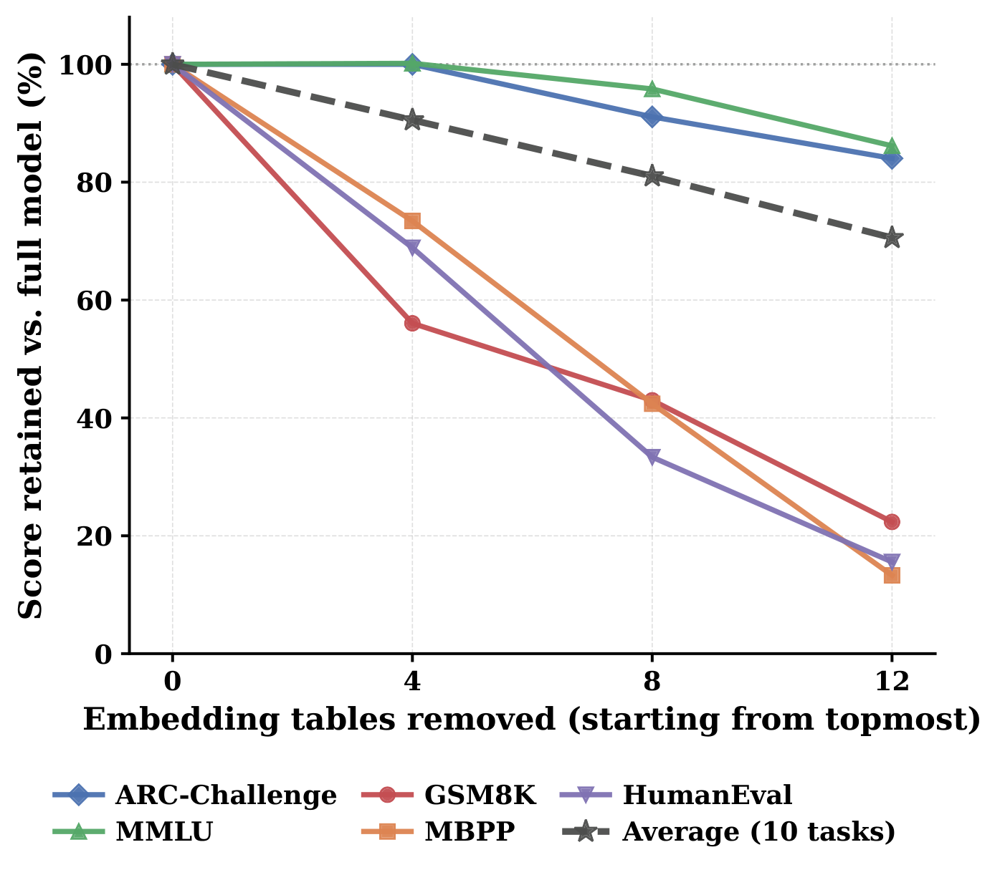
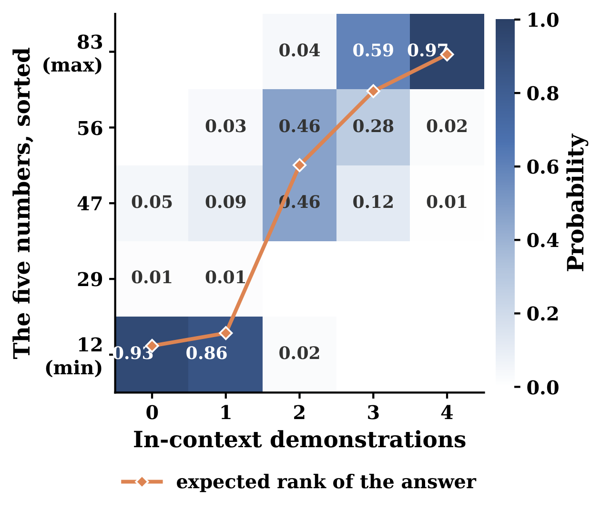
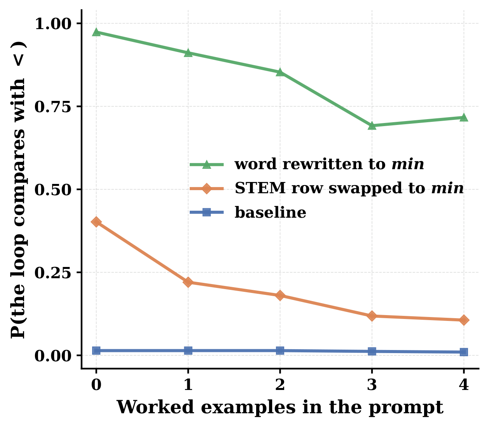

STAPLE is a step toward continually scaling the capabilities of existing language models at minimal cost to serving efficiency, memory and energy footprint, and training resources.
Concretely, it is a recipe for adding static sparse memory to an already pretrained model. It builds on STEM, which replaces each FFN up-projection with a token-indexed embedding table; STAPLE instead retains the up-projections and adds zero-initialized embeddings alongside them. This carries the seed model's knowledge over intact and lets the embeddings learn complementary knowledge at scale, rather than relearning what the model already knows.
On OLMo-2 1B, STAPLE improves over continued dense training across math, code, discrete reasoning and knowledge-intensive tasks, with gains of +4.27 on HumanEval, +2.80 on MBPP, +2.27 on GSM8K and +1.65 on DROP. Performance grows with static capacity, and the gains persist on OLMo-2 7B. STAPLE outperforms the static sparse baselines STEM and an Engram-style model, and achieves a higher average score than an MoE upcycling baseline while decoding 2× faster with less than half its GPU model memory and energy per token.
Billions of parameters added late in training cost almost nothing to run: with the tables offloaded to host memory, STAPLE stays within 1.5% of dense decode throughput and 3% of dense training throughput, with only the embeddings of the ~5% most frequent tokens cached on the GPU for inference.
Because every row is addressed by a token id, the added memory is also interpretable and editable: swapping a single embedding row (e.g. maximum for minimum) flips the model's answer, while consistent in-context evidence can still override the edit, demonstrating the model's flexibility to follow context. → Interpretability
Scaling a model usually means pretraining a bigger one from scratch. Upcycling promises something cheaper: reuse the compute already spent on a dense checkpoint and further enhance its parametric capacity. Today that almost always means Mixture-of-Experts — and MoE upcycling is caught between two failure modes.
Most MoE upcycling initializes new experts by cloning the dense FFN. That preserves the seed model at initialization, but cloned experts can remain functionally similar, so further expert scaling buys less than its parameter count suggests. Breaking this expert homogeneity — with domain-specialized branches, partial re-initialization or extra optimization stages — improves specialization at the cost of a larger training budget or additional training stages. On top of that, MoE brings a systems bill: routing, load balancing, expert fragmentation, HBM-resident expert memory and communication overhead in both training and serving.
We think a good sparse upcycling method has to satisfy three requirements at once:
It must realize the performance gains of an equivalently scaled model trained from scratch, within a limited training budget.
Adding more sparse parametric memory should keep paying off, rather than saturating after the first increment.
The added capacity must not impose serious compute, memory or communication overhead at train or serve time.
Embedding-based static sparsity expands capacity through deterministic token- or phrase-indexed lookups. Unlike cloned MoE experts, token-indexed rows receive updates from distinct token-conditioned subsets of the training data, providing a structural bias toward differentiation. And because access is predictable from the token id alone, large tables can be offloaded to host DRAM and prefetched off the critical path.
But static sparse upcycling brings its own challenges. Replacing pretrained computation with freshly initialized memory throws away features that must then be relearned. Each embedding row is only updated when its token appears, so under a limited token budget the new parameters receive highly non-uniform training signals. And even with those problems solved, it is not obvious that adding more static capacity keeps paying off. Three findings address these concerns:
One design decision separates STAPLE from its predecessor, STEM: the pretrained up projection stays in the graph, and the token-indexed memory is summed into it.
All three variants share the same gated FFN skeleton and differ only in what feeds the feature stream — the second operand of the elementwise product:
STEM swaps the pretrained up projection for a token-indexed lookup from a layer-local table $U_\ell \in \mathbb{R}^{V \times d_\mathrm{ff}}$, so the feature stream depends on the token id $t$ rather than the hidden state. STAPLE keeps $W^u_\ell$ and adds that lookup on top of it as a residual.
With $U_\ell$ zero-initialized, the upcycled model is exactly the seed model at step 0. Nothing is disrupted, no performance has to be recovered, and every gradient the table receives goes toward information the dense pathway does not already carry.
The replacement-style STEM layer is a strong architecture when trained from scratch, but it makes a poor upcycling target. Token-indexed embeddings only receive updates when their tokens appear, so they already get highly non-uniform training signals under a limited budget. Replacement compounds that by deleting the pretrained up projection, a dense component that already encodes useful shared computation, which the new embeddings must then relearn. It also lacks a straightforward function-preserving initialization: with the up projection gone, zero-init is not an option, and random, token-wise mean, principal-component and transformed input-embedding initializations all failed to improve long-term performance in our experiments.
Empirically, upcycled STEM stays below continued dense training even after 100B tokens (teaser (a)). With 12 embedding layers it averages 39.94 against the dense baseline's 44.39, with the largest drops on knowledge tasks and GSM8K (Results).
Three ingredients turn "add an embedding table" into a method that actually beats continued dense training.
Every STEM table starts at zero, so the upcycled model reproduces the seed checkpoint's computation graph exactly and keeps the knowledge already in its weights.
100B tokens drawn from a 2.5% subset of DCLM, with the augmented layers' up projections frozen. The seed model already fits this corpus, so the new tables are pushed to learn complementary signal.
100B tokens of the Dolma 3 Dolmino mix. The STEM embeddings use a 4× larger peak learning rate than the dense parameters, and every group decays linearly to zero.
Warmup matters, but selectively. Brief exposure to the pretraining distribution consistently improves MMLU and average commonsense reasoning over direct upcycling throughout mid-training, suggesting the token-indexed tables pick up useful general-purpose memory before adapting to the mid-training mix. It gives no consistent gain on math and code — and we deliberately excluded math and code sources from the warmup mixture to control this comparison. That asymmetry is informative: the static memory stays responsive to the mid-training distribution and can learn capabilities that warmup did not emphasize.



We scale STAPLE along two axes: the number of embedding-augmented layers $L$ and the embedding dimension $r$. Under the same continued-training budget, going from 4 to 12 augmented layers raises the average downstream score from 45.10 to 45.59. The gains include reasoning-heavy tasks — MBPP improves by 1.80 points, HumanEval by 1.83 and DROP by 0.73 — while MMLU is essentially unchanged (51.27 vs. 51.21).
We place the tables in the early decoder layers (1–12), so that token-specific residuals are integrated into representations that every subsequent layer processes.
The second axis is the capacity of each table. Replacing the full-rank table $U_\ell \in \mathbb{R}^{V \times d_\mathrm{ff}}$ with a rank-$r$ table $U^{(r)}_\ell \in \mathbb{R}^{V \times r}$ plus a learned projection $P_\ell \in \mathbb{R}^{d_\mathrm{ff} \times r}$ gives a continuous capacity knob:
The module has $Vr + d_\mathrm{ff}r$ parameters per layer and adds $2d_\mathrm{ff}r$ projection FLOPs per token. For OLMo-2 1B, $r=512$ shrinks the token-indexed table by $16\times$. At $L=12$ this low-rank variant reaches a 44.97 average, against 45.59 for full-rank STAPLE and 44.39 for dense continuation — so STAPLE benefits from scaling both the number of augmented layers and the capacity of each table.
| Commonsense | Knowledge | RC | Math | Code | |||||||
|---|---|---|---|---|---|---|---|---|---|---|---|
| Method | ARC-E | ARC-C | HSwag | WinoG | MMLU | DROP | GSM8K | MATH | MBPP | HEval | Avg. |
| Dense baseline | 75.42 | 47.44 | 65.18 | 66.22 | 50.30 | 41.91 | 37.76 | 7.68 | 28.80 | 23.17 | 44.39 |
| STAPLE (L=4) | 76.98 | 46.25 | 66.00 | 65.82 | 51.27 | 42.83 | 39.35 | 7.08 | 29.80 | 25.61 | 45.10 |
| STAPLE (L=12) | 76.60 | 45.99 | 68.27 | 63.77 | 51.21 | 43.56 | 40.03 | 7.44 | 31.60 | 27.44 | 45.59 |
| STAPLE (L=12, r=512) | 76.18 | 46.67 | 66.99 | 65.59 | 50.49 | 41.91 | 39.80 | 6.28 | 30.20 | 25.61 | 44.97 |
STAPLE scalability on OLMo-2 1B. The number of augmented layers L and the embedding dimension r are separate capacity axes; r=512 is the low-rank variant, and the other STAPLE rows use full-width embeddings. All rows use the same continued-training budget. Bold marks the best value in each column.
Large parametric memory is usually associated with memorization, yet STAPLE's gains extend to reasoning-heavy tasks: code, math and discrete reasoning.
All OLMo-2 1B models start from the same checkpoint with the same budget: 100B warmup tokens plus 100B mid-training tokens on the Dolma 3 Dolmino mix. For a fair compute comparison, the dense baseline continues training on the same number of tokens under the original pretraining learning-rate schedule.
| Parameter group | Steps | Warmup steps | Resume → end step | Schedule | Peak LR | Min LR ratio | Weight decay |
|---|---|---|---|---|---|---|---|
| Warmup | |||||||
| STEM / STAPLE tables | 50,000 | 500 | 0 → 50,000 | cosine | 4×10−4 | 0.6 | 1×10−4 |
| Engram n-gram tables | 50,000 | 500 | 0 → 50,000 | cosine | 4×10−4 | 0.6 | 1×10−4 |
| Backbone | 50,000 | 0 | 1,907,359 → 2,384,186 | cosine | 4×10−4 | 0.1 | 1×10−1 |
| MoE expert weights | 50,000 | 500 | 0 → 50,000 | cosine | 2×10−4 | 0.91 | 1×10−1 |
| Mid-training | |||||||
| STEM / STAPLE tables | 50,000 | 0 | 0 → 50,000 | linear | 3×10−4 | 0 | 1×10−4 |
| Engram n-gram tables | 50,000 | 0 | 0 → 50,000 | linear | 3×10−4 | 0 | 1×10−4 |
| Backbone | 50,000 | 0 | 0 → 50,000 | linear | 7.44×10−5 | 0 | 1×10−1 |
| MoE expert weights | 50,000 | 0 | 0 → 50,000 | linear | 2×10−4 | 0 | 1×10−1 |
All stages use sequence length 4096 and batch size 512. The backbone warmup schedule resumes the base model's pretraining cosine schedule at its final checkpoint. MoE expert weights follow the backbone schedule at a higher peak learning rate.
| Commonsense | Knowledge | RC | Math | Code | |||||||
|---|---|---|---|---|---|---|---|---|---|---|---|
| Method | ARC-E | ARC-C | HSwag | WinoG | MMLU | DROP | GSM8K | MATH | MBPP | HEval | Avg. |
| OLMo-2 1B — baselines and architecture comparison | |||||||||||
| Dense baseline | 75.42 | 47.44 | 65.18 | 66.22 | 50.30 | 41.91 | 37.76 | 7.68 | 28.80 | 23.17 | 44.39 |
| MoE upcycling (8 experts, top-1) | 75.04 | 45.73 | 66.82 | 64.72 | 49.96 | 40.74 | 39.80 | 7.64 | 28.00 | 28.05 | 44.65 |
| Engram-style | 77.40 | 47.35 | 66.05 | 64.01 | 50.98 | 41.68 | 38.21 | 8.44 | 29.20 | 24.39 | 44.77 |
| STEM (L=12) | 74.37 | 42.06 | 60.79 | 61.56 | 44.30 | 37.00 | 26.00 | 6.94 | 22.60 | 23.78 | 39.94 |
| STAPLE (L=12) | 76.60 | 45.99 | 68.27 | 63.77 | 51.21 | 43.56 | 40.03 | 7.44 | 31.60 | 27.44 | 45.59 |
| OLMo-2 7B backbone — 30B warmup + 70B mid-training tokens | |||||||||||
| Dense baseline | 82.07 | 55.97 | 77.52 | 74.82 | 62.53 | 62.79 | 67.79 | 11.08 | 41.80 | 34.76 | 57.11 |
| STAPLE (L=16) | 82.58 | 57.76 | 77.62 | 74.35 | 62.67 | 63.55 | 70.13 | 12.02 | 43.40 | 35.98 | 58.01 |
L = number of STEM embedding layers. The Engram-style baseline's added embedding memory is parameter-matched to STAPLE-12L; the replacement-style STEM and additive STAPLE models both use 12 embedding layers. Bold marks the best value within each backbone block. Evaluation settings are listed under Experimental setup above.
STAPLE substantially increases the parametric memory footprint, but every row is addressed by token id. That predictable access pattern lets the large tables stay in CPU DRAM while only the needed rows move to the GPU — the challenge is hiding that transfer behind model computation.


Three complementary optimizations reduce retrieval overhead during serving:
Transfers for upcoming requests or prefill chunks overlap with the current computation. During decode, later-layer lookups overlap with earlier-layer execution.
Token frequencies are Zipfian, so caching 5–6% of the vocabulary gives roughly an 80% hit rate. That shrinks STAPLE-12L's GPU-resident embedding footprint from 19.73 GB to a 1 GB cache.
Each distinct row is transferred only once per prefill batch, cutting the prefetch workload by roughly 50%. It is skipped during decode, where the deduplication overhead exceeds the savings.
| Architecture | HBM model memory | Linear FLOPs / token | Decode B1 | Decode B64 | Prefill B1 | Prefill B64 | Energy / token (decode B64) |
|---|---|---|---|---|---|---|---|
| Dense | 2.97 GB weights | ~2.56 G | 1.224 ms / 817 | 1.817 ms / 35.2K | 1.419 ms / 180.5K | 34.184 ms / 479.3K | 18.69 mJ |
| STAPLE-12L | 2.97 GB weights + 1 GB cache | ~2.56 G | 1.237 ms / 809 | 1.845 ms / 34.7K | 1.524 ms / 168.0K | 34.678 ms / 472.5K | 18.92 mJ |
| STEM-12L | 2.57 GB weights + 1 GB cache | ~2.16 G | 1.151 ms / 869 | 1.671 ms / 38.3K | 1.413 ms / 181.1K | 27.580 ms / 594.1K | — |
| MoE (8 experts, top-1) | 8.61 GB weights, all 8 experts | ~2.56 G + routing | 1.951 ms / 513 | 3.761 ms / 17.0K | 2.975 ms / 86.1K | 36.179 ms / 452.9K | 45.37 mJ |
One NVIDIA B200, context length 256. Latency / throughput in ms / tok s−1. HBM memory includes resident weights and GPU caches. STAPLE-12L offloads 12 embedding tables (19.73 GB in BF16) to CPU DRAM and keeps a 1 GB GPU cache. The MoE baseline keeps all experts in HBM and incurs routing and token-reordering overhead. The serving stack uses CUDA graphs, a fused in-place KV-cache append kernel and FlashInfer for paged decode attention. Energy per generated token was measured with Zeus in a separate run on one otherwise idle B200 of a DGX B200 (dual Xeon Platinum 8570, PCIe Gen5 ×16 CPU–GPU links); three repeats per model agree within 1.5%. It was not measured for STEM-12L.
With 19.73 GB of learned tables offloaded, STAPLE-12L's decode throughput stays within 1.0% of dense at batch size 1 and 1.5% at batch size 64. Relative to the MoE baseline, STAPLE uses about 54% less HBM model memory and improves decode throughput by 2.04× at batch size 64 and 58% at batch size 1.
Beyond latency, energy per generated token captures the benefits of weight reuse across the batch, efficient dense kernels, and less background energy from shorter execution. In our throughput-oriented decoding evaluation (batch size 64), STAPLE-12L's measured energy per token is 18.92 mJ, about 1.2% above dense (18.69 mJ) and 58.3% below the MoE baseline (45.37 mJ). The CPU side adds very little: activity-based estimates put STAPLE's additional host-memory and PCIe transfer energy below 0.2% of the measured energy, and the CPU launch thread at roughly 1% for all three models, which leaves the comparison essentially unchanged.
Training also needs gradients and optimizer states, which makes keeping the full tables on the GPU costly. But each step only touches the distinct token ids in its batch, $U = |\mathrm{uniq}(\mathcal{B})|$, rather than the full vocabulary $V$. With non-uniform token frequencies, typically $U \ll V$, and $U$ grows sublinearly with batch size.
The full STEM tables and fp32 AdamW states stay in CPU DRAM; each step brings only the active $U \times d_\mathrm{ff}$ rows to the GPU. That compact buffer is the autograd leaf, so backward never allocates a dense $V \times d_\mathrm{ff}$ gradient, and a row-restricted AdamW updates only the accessed rows. We observe no degradation in end-to-end downstream task performance when training with these sparse optimizer updates.
Host gathers, host-to-device and device-to-host transfers, and optimizer work all overlap with backbone computation. Host work scales with $U$ while transformer compute scales with total tokens, so overlap gets easier at larger batches. Gradient staging is double-buffered, and next-step gathers are issued in forward consumption order.
Sustaining host bandwidth takes care: table allocations are interleaved across NUMA memory controllers and optionally backed by huge pages, and the OpenMP worker pool idles passively so it does not compete with the GPU-launch thread.
The result: STAPLE-12L trains within 3% of dense throughput (113.9K vs. 117.0K tokens/s) with 91.9 GiB of tables and optimizer moments in host DRAM. Its GPU-resident weights and optimizer state match the dense model, and the compact row buffers add only about 3% peak HBM. The MoE baseline trains 13% slower (101.7K tokens/s) and needs 2.9× the GPU memory for weights and optimizer state.
Two checks: are the learned embeddings different from the dense pathway, and does removing them hurt?

Low cosine similarity says the two feature streams occupy different directions, but geometry alone does not show the memory is useful. So we test the model's dependence on it directly: we remove the last 4, last 8 or all 12 embedding tables from a trained STAPLE-12L checkpoint at evaluation time, without retraining.
The ten-benchmark average falls from 45.59 to 41.28, 36.94 and 32.17. The model clearly relies on its learned static memory after mid-training. (The fully ablated model is not the original dense seed, since the remaining weights have co-adapted with the memory.)
The dependence is sharpest on math and code. Removing all tables lowers GSM8K, MBPP and HumanEval by 31.08, 27.40 and 23.17 points, compared with 7.34 on ARC-Challenge and 7.08 on MMLU. Removing only the last four already costs 17.59 points on GSM8K, 8.40 on MBPP and 8.54 on HumanEval. The deeper tables contribute most to generation-heavy math and programming, while knowledge-intensive tasks lean on the bottom-most layers.

The removal ablations show that STAPLE relies on its memory, but not how that memory affects individual predictions. Swapping one token's embedding row — and nothing else — lets us find out.
Following STEM, we probe the memory with causal interventions. Each row of $U_\ell$ is selected only by the input token id, so substituting one token's row for another's changes the memory contribution without changing the input text: any change in the output is attributable to the embeddings. At the same time, STAPLE scales $U_\ell[t]$ by the context-dependent gate $\mathrm{SiLU}(W^g_\ell x_\ell)$, so the context may counteract a conflicting memory signal.
We test this on two tasks: finding the maximum of five numbers, and writing Python code that finds the maximum of an array. In both, we replace the STEM embedding for maximum with the one for minimum, and vary the number of correct demonstrations in the prompt.
maximumminimum

Order statistics. Without demonstrations, the swap overrides the instruction: the model assigns 0.93 probability to the minimum. Each demonstration shifts probability toward larger answers, and with four the model assigns 0.97 to the maximum.
Code generation. The swap also changes the generated algorithm, since comparing with < rather than > turns the loop into a minimum finder. The probability of < is 0.40 without demonstrations and falls to 0.11 with four. For reference, the unmodified model almost never uses <, while rewriting the instruction to minimum makes it the most likely choice at every demonstration count.
In both tasks the static embeddings causally change the output — from the selected answer to the program's logic — yet consistent context progressively overrides them. That is what we would expect if the context-dependent gate controls how much the token-indexed memory contributes.
The same mechanism carries through multi-step reasoning. On a GSM8K item the unmodified model solves correctly (four-shot chain-of-thought), we remap the STEM row for the token 60 to the row for 120. The input text and dense weights are unchanged, and the remapping applies wherever that token id occurs, including in the model's own continuation.
In the first month, the program had 60 downloads.
In the second month, the program had 60 x 3 = ⟨⟨60*3=180⟩⟩ 180 downloads.
In the third month, the program had 180 - (180 x 0.3) = 180 - 54 = ⟨⟨180-54=126⟩⟩ 126 downloads.
So the program had a total of 60 + 180 + 126 = ⟨⟨60+180+126=366⟩⟩ 366 downloads over the three months.
#### 366
In the first month, the program had 120 downloads.
In the second month, the program had 120 x 3 = 360 downloads.
In the third month, the program had 360 - (360 x 0.3) = 360 - 108 = 252 downloads.
So the program had a total of 120 + 360 + 252 = ⟨⟨120+360+252=732⟩⟩ 732 downloads over the three months.
#### 732
In the first month, the program had 120 downloads.
In the second month, the program had 120 x 3 = ⟨⟨120*3=360⟩⟩ 360 downloads.
In the third month, the program had 360 - (360 x 0.3) = ⟨⟨360-108=252⟩⟩ 252 downloads.
So the program had a total of 120 + 360 + 252 = ⟨⟨120+360+252=732⟩⟩ 732 downloads over the three months.
#### 732
The row update changes the monthly quantities from 60, 180 and 126 to 120, 360 and 252, and the total from 366 to 732. Agreement with the rewritten-question control suggests the edit changes the effective numerical premise that every later step computes from. This is a single example linking a token-addressable memory edit to coherent downstream reasoning; it does not establish general edit reliability or an isolated fact representation. And because the remapping applies to every occurrence of the token, it does not separate prompt-processing effects from feedback through generated tokens.
STAPLE is a simple, sample-efficient method for continually expanding the parametric capacity of a pretrained dense model during mid-training. The key idea is to preserve the pretrained model's learned knowledge and complement it with scalable memory.
STAPLE shows that the system-efficient scaling of static sparsity translates into practical performance gains even in the upcycling setting. Despite introducing a large number of new parameters, it remains highly token-efficient and provides consistent gains as memory scale grows, notably on reasoning-heavy tasks. Compared with a serving-efficient MoE upcycling baseline, STAPLE achieves a higher average score while training faster and decoding 2× faster with a much smaller GPU memory footprint. Its token-indexed memory is also interpretable and editable: targeted interventions on individual rows change model behavior, while consistent contextual evidence can still override them, demonstrating the model's flexibility to follow context.
An exciting direction for future work is whether jointly scaling static memory with MoE can push the performance–efficiency frontier further.
@misc{sadhukhan2026staplestaticsparseupcycling,
title={STAPLE: Static Sparse Upcycling of Pretrained Checkpoints via Embedding Modules},
author={Ranajoy Sadhukhan and Euijin Hong and Sheng Cao and Zechun Liu and
Shuowei Jin and Sha Li and Changlong Yu and Xin Liu and Qin Lu and
Zhenyu Shi and Priyanka Nigam and Beidi Chen},
year={2026},
eprint={2610.12599},
archivePrefix={arXiv},
primaryClass={cs.LG},
url={https://arxiv.org/abs/2610.12599},
}